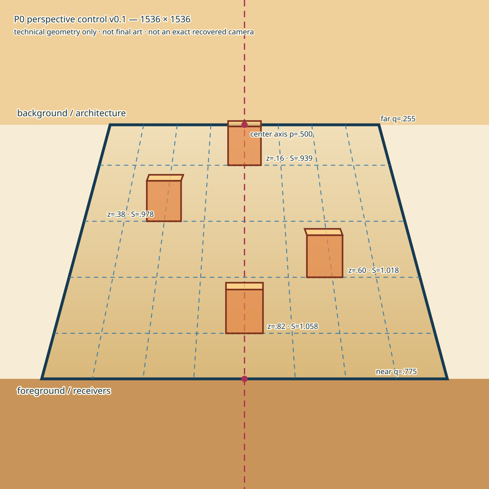
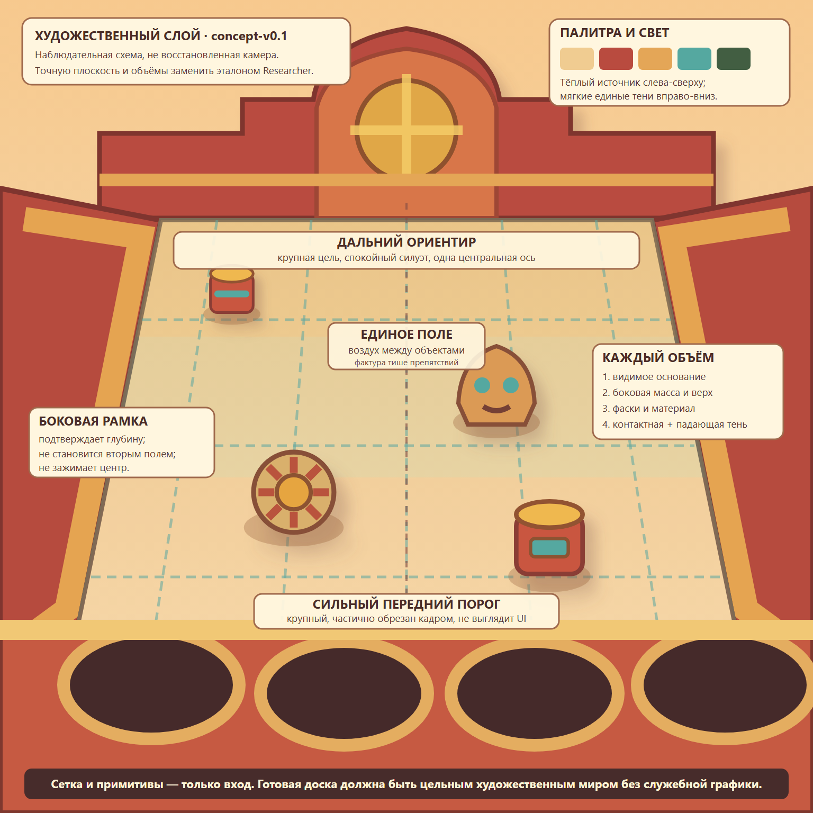
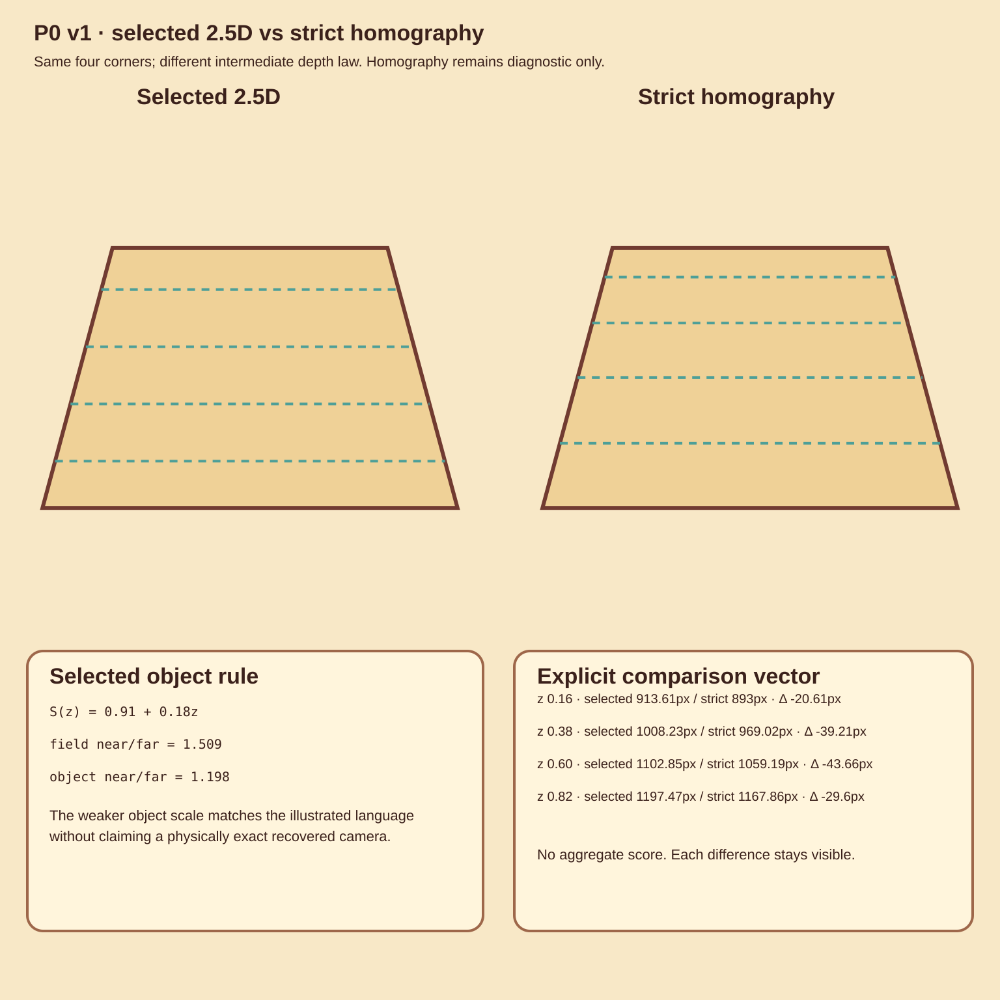

Исходный референс №03 ART REFERENCE
Художественное качество, материал, свет и язык объёмов. Read-only, не копируется в Git.

Формальный эталон Builder v1 GEOMETRY CONTROL
Точное поле, опорные точки, ряды и масштабы из Research JSON.

Research template v0.1 SOURCE CONTROL
Исходная визуализация числовой модели Researcher.

Concept template v0.1 ART DIRECTION ONLY
Иерархия и художественный язык. Наблюдательная геометрия намеренно не используется как control.

Диагностическое сравнение NO AGGREGATE SCORE
Основная 2.5D-модель и строгая гомография в одном кадре; различия сохранены как вектор метрик.
